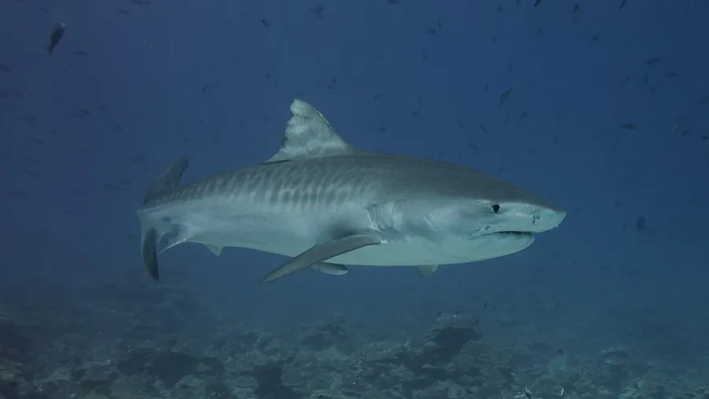

鱼类 · 动物界
虎鲨 Galeocerdo cuvier

体侧有暗色横斑、性情凶猛的大型鲨鱼，食性极杂，被称为“海中清道夫”，是少数会主动攻击人类的大型鲨鱼之一。
- 分类
- 门脊索动物门纲软骨鱼纲目真鲨目科鼬鲨科属鼬鲨属
- 栖息环境
- 热带和亚热带海域的近岸、珊瑚礁和远洋，有时进入河口
- 地理分布
- 全球热带和亚热带海域，包括太平洋、大西洋和印度洋
- 保护级别
- IUCN 近危（NT）；中国未列入国家重点保护野生动物名录
物种志
虎鲨也就是鼬鲨，体呈粗壮的纺锤形，吻部宽钝。幼鱼体侧有深色的横斑，像老虎的条纹，因此得名；成鱼的斑纹会逐渐变淡。体色背部灰褐，腹部白色。成鱼体长一般 3–4 m，最大记录可超过 5.5 m，体重可达 900 kg 以上。
虎鲨分布于全球热带和亚热带海域，包括太平洋、大西洋和印度洋的近岸和远洋。它是肉食性鱼类，而且食性极杂，捕食鱼类、海龟、海鸟、海豚和乌贼，也吃腐肉和垃圾，因此被称为“海中清道夫”。虎鲨为卵胎生，每胎可产数十尾幼鲨，幼鲨在母体内就已发育出牙齿。它是少数会主动攻击人类的大型鲨鱼之一，不过攻击事件多与误认或食物争夺有关。由于鱼翅贸易和渔业兼捕，虎鲨种群数量下降，IUCN 将其评为近危；中国未将其列入国家重点保护野生动物名录。
形态与习性
- 食性食性极杂，捕食鱼类、海龟、海鸟、海豚、乌贼，也食腐肉
- 体长一般 3–4 m，最大记录超过 5.5 m
- 体重大型个体可达 900 kg 以上
- 繁殖卵胎生，每胎可产数十尾幼鲨
- 寿命可达 30 年以上
- 习性常单独活动，夜间更活跃，会进入浅海和河口
趣味知识
- 幼年虎鲨体侧的深色横斑像老虎的条纹，长大后会逐渐变淡。
- 它的食性极杂，从海龟、海鸟到腐肉甚至垃圾都会吞下。
- 虎鲨是少数会主动攻击人类的大型鲨鱼之一，但攻击事件并不常见。